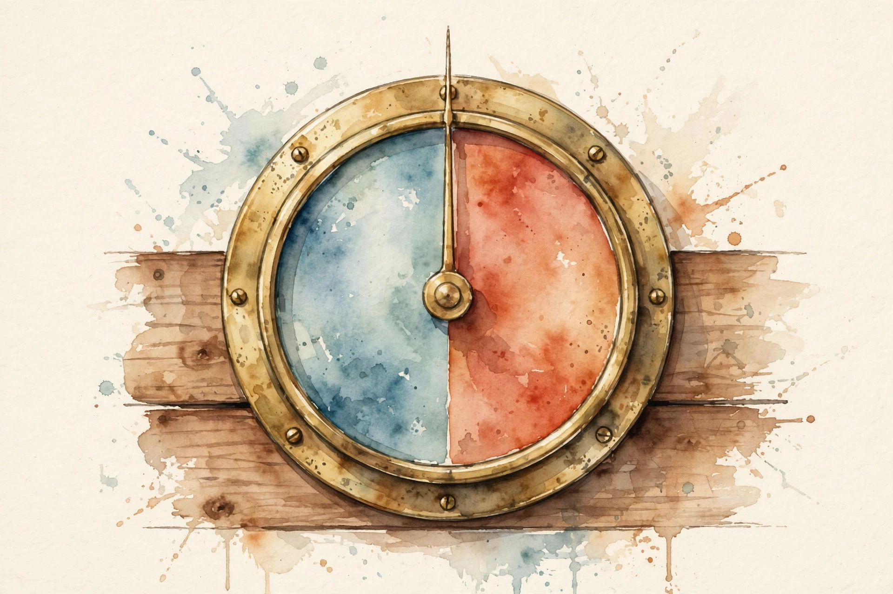

Companion · narrated from the lesson document
Dedup first, filter second, mix deliberately. This companion walks the data mixing unit: quality classifiers, harmful-content filters, exact and near dedup, Bloom filters, MinHash and LSH, train-test dedup, reweighting, mixture search, synthetic rewriting, selection bias, ablations, and the memorization tradeoff.
From the lesson The idea, and every number beside it, comes from the cited section of u14_data_mixing.md. The phrasing is the companion's.
Illustration Invented by the companion: an analogy, a toy with made-up values, or a what-if. Never lecture content.
companion Companion voice: the idea above the tag is from the lesson. The generalization below it is the companion's.
Provenance: no full lecture transcript exists for this session. The page narrates the lesson document content/v2/cs336/lessons/u14_data_mixing.md, not a video. Claim class: REQUESTED-BRANCH. Standing note: every number below is computed by visuals/compute_u14.py on synthetic toys, executed 2026-10-06. Every number carries the lesson section that reports it.
Section 1 · Remediation
From the lessonRemediation
Duplicates waste training compute and inflate memorization. The lesson's toy from compute_u14.py: 10,000 synthetic documents contain only 5,840 unique ones. Exact-dup rate 41.6 percent, and 1,011 documents appear 3 or more times. Filtering after dedup means the quality scores are computed once per unique document. The order matters: dedup first, then filter, then mix. Every section of this unit sits in that pipeline order.
visuals/compute_u14.py (executed 2026-10-06).Dedup first. Quality scores are computed once per unique document, not once per copy.
Section 2 · C01, C02
From the lessonC01 §2, §5, §6
A classifier scores document quality. Where do you cut? The classifier is a dial, not a verdict. Low threshold keeps volume with noise, high threshold keeps purity with loss of coverage. The operating point is a business decision about the corpus. Keep documents with score at or above t. The tradeoff curve is the ROC of the classifier on the toy labels. The lesson's run on 20,000 synthetic docs, executed 2026-10-06: t=0.3 keeps good 1.00 and bad 0.33. t=0.5 keeps 0.94 and 0.06. t=0.7 keeps 0.67 and 0.00. The classifier's own biases become the corpus's biases: it filters what it was trained to dislike. The failure case: the classifier was trained on Wikipedia-likes. It downranks dialects and forums. The assumption "quality is neutral" breaks. Audit by domain.
From the lessonC02 §2, §5
Which content must never train the model? The standard blocklist: sexual content involving minors, graphic violence promotion, instructions facilitating wrongdoing, hate targeting protected groups. The posture is high recall: miss nothing in these classes. Safety filtering is asymmetric: a missed harmful document is an incident, a wrongly removed benign one is a statistic. The threshold sits far toward recall. The stack: blocklists for the known-bad, classifiers for the fuzzy middle, human review for appeals. The lesson's posture: safety classes need dedicated classifiers with recall above 0.99 on labeled probes. A t=0.3-style recall posture that keeps bad at 0.33 is unacceptable for safety. Aggressive safety filtering removes legitimate content about the blocked topics (medical, legal, news). The corpus loses coverage where users ask most. The failure case: adversarial phrasing evades the classifier while keeping the meaning. The assumption "the classifier sees through paraphrase" breaks. Red-team the filter.
visuals/compute_u14.py (executed 2026-10-06).
From the lessonC01 §6 Threshold toy. Pick t, read the keep rates from the lesson's table.
t
Press the button.
Table: t=0.3 keeps good 1.00/bad 0.33, t=0.5 keeps 0.94/0.06, t=0.7 keeps 0.67/0.00.
The classifier is a dial, not a verdict. t=0.5 keeps good 0.94 and bad 0.06.
Safety filtering is asymmetric: a miss is an incident, a false removal is a statistic. Recall above 0.99 on probes.
Section 3 · C03
From the lessonC03 §2, §5, §6
How much of the crawl is repeated? Exact dedup is a hash comparison: same bytes, same hash, keep one. Near-dup catches the reworded, templated, and boilerplate-shared copies that hashing misses. Exact: group by hash, keep first. Near: shingle sets, Jaccard similarity, MinHash plus LSH (C05). The lesson's run, executed 2026-10-06: 10,000 docs to 5,840 unique, 41.6 percent exact-dup rate, 1,011 docs appear 3 or more times. Exact dedup is one pass and cheap. Near-dup is the expensive part (C05). The failure case: the same article under 100 URLs with different ad parameters. URL dedup keeps 100 copies. The assumption "URL identity means content identity" breaks. Hash the content.
Section 4 · C04, C05
From the lessonC04 §2, §5, §6
1B documents do not fit in a hash set. How do you test membership? A Bloom filter is a bit array with k hashes. "Not seen" is certain. "Seen" is probable. False positives drop a few unique documents: tune k to the bit budget. After kn insertions into m bits, a bit is 0 with probability about (1-1/m)^{kn}, about e^{-kn/m}. All k probe bits set: (1 - e^{-kn/m})^k. The lesson's run, executed 2026-10-06: n=1e6, 8 bits per item, k=6 gives FPR 0.0216, k=3 gives 0.0306, k=10 gives 0.0342. The minimum sits near k=6. 8 bits per item against 64 or more for a hash set entry. The price is the 2.16 percent false-positive drop rate. The failure case: adversarial inputs that collide under the chosen hashes. The FPR formula assumes uniform hashing. The assumption breaks under attack. Use a keyed hash.
From the lessonC05 §2, §5, §6
Two documents share most 5-grams but differ in ads. Are they dups? Shingles turn text into sets. MinHash compresses each set to a signature where agreements estimate Jaccard. LSH bands the signature so only candidate pairs are compared: the S-curve separates dups from non-dups. P(minhash agrees) = Jaccard s. Banding: a band matches with probability s^r, at least one of b bands matches with 1-(1-s^r)^b. The lesson's run, executed 2026-10-06: true Jaccard 0.113, MinHash(128) estimate 0.125. LSH with b=20 bands, r=5 rows: detection probability 0.470 at s=0.5, 0.975 at s=0.7, 1.000 at s=0.8. 128 hashes per document is the compute price. Shorter signatures are cheaper and noisier. The failure case: boilerplate-heavy pages. Jaccard is high but the content differs. The assumption "high Jaccard means dup" breaks. Shingle with content weighting or strip boilerplate first.
visuals/compute_u14.py (executed 2026-10-06).From the lessonC04 §5 Bloom toy. FPR = (1 - e^{-kn/m})^k.
n (M) bits/item k
Press the button.
At the defaults: FPR 0.0216, matching C04 §6.
"Not seen" is certain. "Seen" is probable. k=6 at 8 bits per item: 2.16 percent false positives.
The S-curve separates dups from non-dups: 0.470 at s=0.5, 0.975 at s=0.7, 1.000 at s=0.8.
Section 5 · C06
From the lessonC06 §2, §5, §6
The benchmark question appears verbatim in training. Whose fault? The pipeline's. Train-test dedup must run against every eval set before training, at the n-gram level, not just the document level. Document dedup removes copies. Train-test dedup removes leaks. A benchmark item quoted inside a long web page survives document dedup and must be caught by n-gram matching. Index training n-grams (Bloom or suffix array), probe each eval item, drop training documents above the overlap threshold. The lesson's toy: 300 eval items, 13-gram index. Documents with more than 80 percent of eval 13-grams are dropped. Counts from the U12-C02 toy setup. The n-gram index over the full corpus is the biggest dedup structure in the pipeline. The failure case: paraphrased eval items. N-gram matching misses them (U12-C02). The assumption "leaks are verbatim" breaks. Add embedding-based screening for high-stakes evals.
Section 6 · C07, C08
From the lessonC07 §2, §5, §6
Code must rise 1.67x in the mix. How? Reweighting is importance sampling over domains. Sampling multiplier = target/source per domain, applied at draw time. Multipliers above 1 repeat documents, below 1 subsample them. The corpus on disk does not change. The draw distribution does. The toy multipliers from U13: 0.67, 1.50, 1.67, 2.00, 1.00. Code: 0.25/0.15 = 1.67. High multipliers repeat data (memorization, C12). The mixture and the dedup interact. The failure case: multiplier 100x on a tiny domain. The model memorizes the domain's quirks. The assumption "repeats are harmless" breaks. Cap multipliers.
From the lessonC08 §2, §5, §6
Hand-set mixtures are opinions. How do you search? Mixture search is hyperparameter search over the simplex. Each point is a training run (or a proxy run). The interaction term is why the optimum is not always at a corner. Grid or Bayesian search over the simplex, fit a response surface, pick the minimum. Proxy models (small scale) stand in for full runs. The lesson's toy, executed 2026-10-06: L(w) = w*2.5 + (1-w)*3.0 + 0.4*w*(1-w) over w in [0,1]. Optimum at w=1.0 with L=2.500, equal mix gives 2.850. Each evaluation is a training run. Proxy runs cut the cost but add transfer risk (U10-C12). The failure case: the proxy disagrees with full scale. The searched optimum flops at scale. The assumption "proxy transfers" breaks. Validate the top-3 mixes at scale.
Section 7 · C09, C10
From the lessonC09 §2, §5, §6
The web lacks enough math textbooks. Can a model write them? Rewriting modes: paraphrase (same content, new words), distillation (teacher outputs as targets), synthetic problems (new items with known answers). Every mode needs validation against ground truth. Synthetic data is a photocopy of a photocopy: each generation loses fidelity and amplifies the generator's biases. It helps where real data is scarce and hurts where the generator is wrong. The pipeline: generate, filter by verifiable checks, mix at a capped fraction. The lesson's toy: 1M synthetic math problems, 80 percent pass the answer check, 800k enter the mix at 10 percent weight. The 20 percent failure rate is why the check exists. Generation compute is large. Wrong synthetic data teaches wrong facts confidently. The failure case: unverifiable domains (opinions, style). The filter cannot check truth, and the synthetic data teaches the generator's biases as facts. The assumption "verification is possible" breaks. Keep synthetic out of such domains.
From the lessonC10 §2, §5
The filter keeps "high quality". High quality according to whom? Three channels: the classifier's training data, the heuristic thresholds, and the source mix. Each one tilts the corpus. Every filter is a value judgment with a false-positive distribution. The corpus is the sum of those judgments. Audit the kept-out set, not just the kept set. The lesson's audit: from the C01 toy at t=0.5, keep good 0.94 overall. The audit asks: is it 0.94 for every domain, or 0.99 for one and 0.80 for another? Audits need subgroup labels, which are work to produce. Un-audited filters are the default and the risk. The failure case: the audit itself uses the classifier's labels. Circular validation. The assumption "the audit is independent" breaks. Use human labels for the audit set.
Every filter is a value judgment with a false-positive distribution. Audit the kept-out set.
Section 8 · C11
From the lessonC11 §2, §5, §6
Did dedup actually help, or was it the filter? Ablation is controlled subtraction. The full pipeline is the baseline, each variant drops exactly one stage. The stage with the biggest delta earns its keep. Randomize the order, fix seeds, report CIs. The lesson's toy: full pipeline proxy loss 2.50. No-dedup 2.56 (plus 0.06), no-filter 2.53 (plus 0.03), no-reweight 2.51 (plus 0.01). Dedup earns its keep most. Each ablation is a training run. Proxy scale keeps it affordable. Transfer risk applies (U10-C12). The failure case: stages interact. Dedup plus filter together beat the sum of their solo deltas. The assumption "effects add" breaks. Run the factorial for the top candidates (U18-C06).
Dedup earns its keep most: plus 0.06 without it, against 0.03 for the filter and 0.01 for reweighting.
Section 9 · C12
From the lessonC12 §2, §5, §6
A document repeats 10 times. Does the model memorize it? Repetition is the dial between learning and memorizing. A few repeats help rare patterns, many repeats burn compute on text the model could recite. Dedup sets the dial near 1 for the bulk. The lesson's toy logistic, p = sigmoid(1.2 ln(reps) - 1.5), executed 2026-10-06: recall probability 0.18 at 1 repetition, 0.34 at 2, 0.61 at 5, 0.78 at 10. Diminishing returns in log-repetitions. Repeated tokens cost training FLOPs and teach memorization instead of generalization. The failure case: copyrighted or private text repeated. Memorization becomes extraction risk. The assumption "repetition is benign" breaks. Dedup sensitive classes aggressively.
Repetition is the dial between learning and memorizing: 0.18 at 1 rep, 0.78 at 10.
Section 10 · Synthesis
From the lesson The arc, end to end. Dedup first: 41.6 percent of the toy is copies (remediation, C03). Quality classifiers are dials. Safety filters sit at recall above 0.99 (C01, C02). Bloom filters give 8x memory savings at 2.16 percent false positives (C04). MinHash plus LSH separates dups on the S-curve (C05). Train-test dedup runs at the n-gram level (C06). Reweighting implements the mixture. Mixture search tests it (C07, C08). Synthetic data needs verifiable checks and capped fractions (C09). Every filter is a value judgment: audit the rejects (C10). Ablations fund what earns its keep (C11). Repetition is the dial between learning and memorizing (C12).
From the lesson Where the unit points next, in the lesson's own forward links: U12 supplies the eval sets that train-test dedup protects and the contamination audit. U13 supplies the mixture the reweighting implements. U15 takes the mixed corpus into SFT. U16 supplies post-training refusal as the partner of pretraining filtering. U10 supplies the proxy transfer discipline for mixture search.
Wisdom index
Each nugget states the idea in plain words, why it matters, and the transferable principle. Every one is anchored to its lesson section.